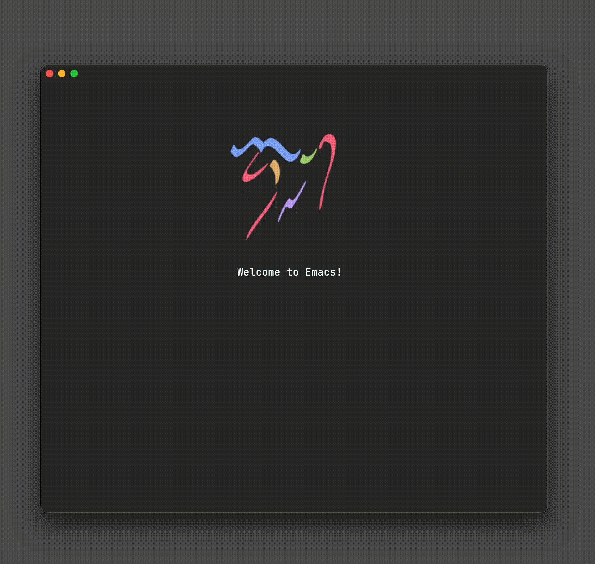
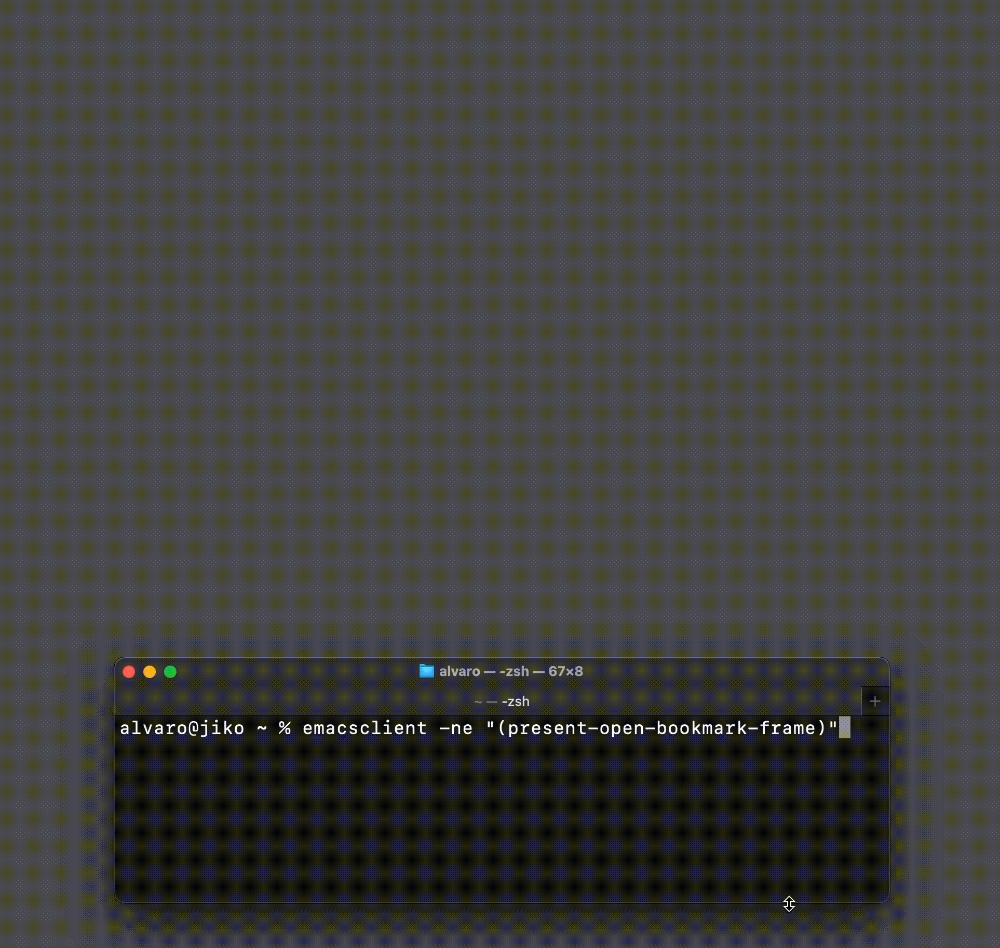
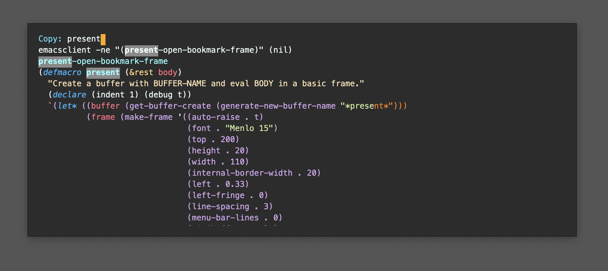

Álvaro Ramírez
Building your own bookmark launcher
✨sponsor✨ this content
I've been toying with the idea of managing browser bookmarks from you know where. Maybe dump a bunch of links into an org file and use that as a quick and dirty bookmark manager. We'll start with a flat list plus fuzzy searching and see how far that gets us.
The org file would look a little something like this:
My bookmarks - [[https://lobste.rs/t/emacs][Emacs editor (Lobsters)]] - [[https://emacs.stackexchange.com][Emacs Stack Exchange]] - [[https://www.reddit.com/r/emacs][Emacs subreddit]] - [[https://emacs.ch][Emacs.ch (Mastodon)]] - [[https://www.emacswiki.org][EmacsWiki]] - [[https://planet.emacslife.com/][Planet Emacslife]]
Next we need fuzzy searching, but first let's write a little elisp to extract all links from the org file:
(require 'org-element) (require 'seq) (defun browser-bookmarks (org-file) "Return all links from ORG-FILE." (with-temp-buffer (let (links) (insert-file-contents org-file) (org-mode) (org-element-map (org-element-parse-buffer) 'link (lambda (link) (let* ((raw-link (org-element-property :raw-link link)) (content (org-element-contents link)) (title (substring-no-properties (or (seq-first content) raw-link)))) (push (concat title "\n" (propertize raw-link 'face 'whitespace-space) "\n") links))) nil nil 'link) (seq-sort 'string-greaterp links))))
The snippet uses org-element to iterate over links to collect/return them in a list. We join both the title and url, so searching can match either of these values. We also add a little formatting (new lines/face) to spiff things up.
(browser-bookmarks "/private/tmp/bookmarks.org")
(#("Planet Emacslife\nhttps://planet.emacslife.com/\n" 17 46 (face whitespace-space)) #("EmacsWiki\nhttps://www.emacswiki.org\n" 10 35 (face whitespace-space)) #("Emacs.ch (Mastodon)\nhttps://emacs.ch\n" 20 36 (face whitespace-space)) #("Emacs (Stack Exchange)\nhttps://emacs.stackexchange.com\n" 23 54 (face whitespace-space)) #("Emacs (Reddit)\nhttps://www.reddit.com/r/emacs\n" 15 45 (face whitespace-space)) #("Emacs (Lobsters)\nhttps://lobste.rs/t/emacs\n" 17 42 (face whitespace-space)))
We can now feed our list to our preferred narrowing framework (ivy, helm, ido, vertico) and use it to quickly select a bookmark. In the past, I've used the likes of ivy-read directly, though have since adopted the humble but mighty completing-read which hooks up to any of the above frameworks.
With that in mind, let's use completing-read to make a selection and split the text to extract the corresponding URL. Feed it to browse-url, and you got your preferred browser opening your bookmark.
(defun open-bookmark () (interactive) (browse-url (seq-elt (split-string (completing-read "Open: " (browser-bookmarks "/private/tmp/bookmarks.org")) "\n") 1)))
I remain a happy ivy user, so we can see its fuzzy searching in action.

At this point, we now have our bookmark-launching Emacs utility. It's only an M-x open-bookmark command away, but we want to make it accessible from anywhere in our operating system, in my case macOS.
Let's enable launching from the command line, though before we do that, let's craft a dedicated frame for this purpose.
(defmacro present (&rest body) "Create a buffer with BUFFER-NAME and eval BODY in a basic frame." (declare (indent 1) (debug t)) `(let* ((buffer (get-buffer-create (generate-new-buffer-name "*present*"))) (frame (make-frame '((auto-raise . t) (font . "Menlo 15") (top . 200) (height . 20) (width . 110) (internal-border-width . 20) (left . 0.33) (left-fringe . 0) (line-spacing . 3) (menu-bar-lines . 0) (minibuffer . only) (right-fringe . 0) (tool-bar-lines . 0) (undecorated . t) (unsplittable . t) (vertical-scroll-bars . nil))))) (set-face-attribute 'ivy-current-match frame :background "#2a2a2a" :foreground 'unspecified) (select-frame frame) (select-frame-set-input-focus frame) (with-current-buffer buffer (condition-case nil (unwind-protect ,@body (delete-frame frame) (kill-buffer buffer)) (quit (delete-frame frame) (kill-buffer buffer))))))
Most of the snippet styles our new frame and invokes the body parameter. While I don't typically resort to macros, we get a little syntatic sugar here, so we can invoke like so:
(defun present-open-bookmark-frame () (present (browse-url (seq-elt (split-string (completing-read "Open: " (browser-bookmarks "/private/tmp/bookmarks.org")) "\n") 1))))
Wrapping our one-liner with the present-open-bookmark-frame function enables us to easily invoke from the command line, with something like
emacsclient -ne "(present-open-bookmark-frame)"

Now that we can easily invoke from the command line, we have the flexibility to summon from anywhere. We can even bind to a key shortcut, available anywhere (not just Emacs). I typically do this via Hammerspoon, with some helpers, though there are likely simpler options out there.
function emacsExecute(activate, elisp) if activate then activateFirstOf({ { bundleID="org.gnu.Emacs", name="Emacs" } }) end local socket, found = emacsSocketPath() if not found then hs.alert.show("Could not get emacs socket path") return "", false end local output,success = hs.execute("/opt/homebrew/bin/emacsclient -ne \""..elisp.."\" -s "..socket) if not success then hs.alert.show("Emacs did not execute: "..elisp) return "", false end return output, success end function openBookmark() appRequestingEmacs = hs.application.frontmostApplication() emacsExecute(false, "(present-open-bookmark-frame)") activateFirstOf({ { bundleID="org.gnu.Emacs", name="Emacs" } }) end hs.hotkey.bind({"alt"}, "W", openBookmark)
With that, we have our Emacs-powered bookmark launcher, available from anywhere.
While we used our Emacs frame presenter to summon our universal bookmark launcher, we can likely the same mechanism for other purposes. Maybe a clipboard (kill ring) manager?

What would you use it for? Get in touch (Mastodon / Twitter / Reddit / Email).
Enjoying this content? Find it useful? Consider ✨sponsoring✨.